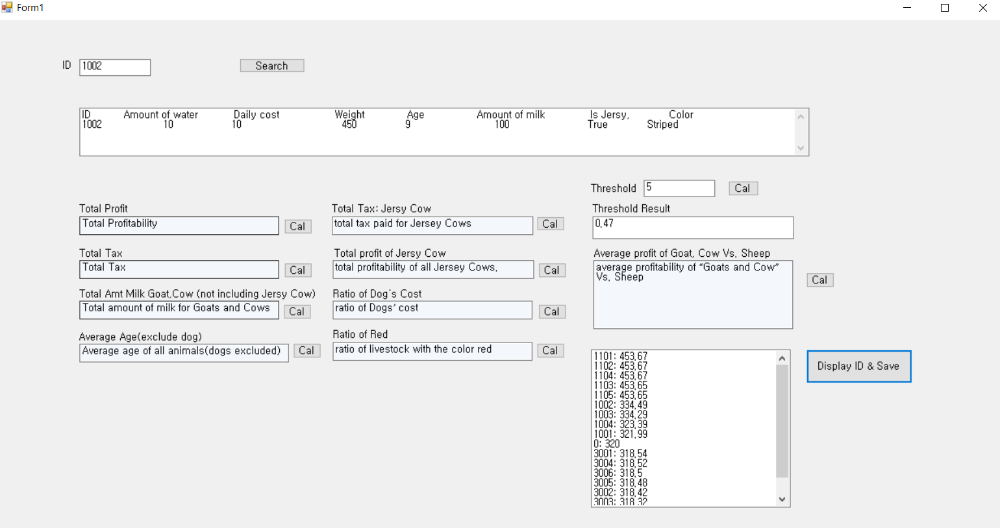

Live Stock Application
C# GUI View
Livestock application is an application that uses the GUI of Visual Studio. This application makes it easy for the owner of the farm to calculate the probability of the animals that he or she currently has. The reason of using GUI is to make easier for users to use. Therefore, as you can see in the image, the user can search the details of the animals they have in the database, and if there's a probability they want to know, they can automatically calculate it. Moreover, I arranged the order of which animals produce the most probability.
The first hurdle for this application is to connect the Visual Studio with the database. There were various ways to connect the database which depends on the type of software is using for the specific database. First of all, the database in this project used the Access Database, so we connected the Access database to the Visual Studio. This database contains details of each animal and their tax information. For example, if there are several cows on the farm, they make unique IDs and collect information about each cow on one table. And here, unlike other animals, it supposed to use the Boolean type to distinguish whether it's just a cow or a Jersy cow, considering if it's a Jersy cow or not. The table containing the tax information also enters the information for each tax. Connect this information to Visual Studio so that users can easily call information using Polymorphism to get the information they want.